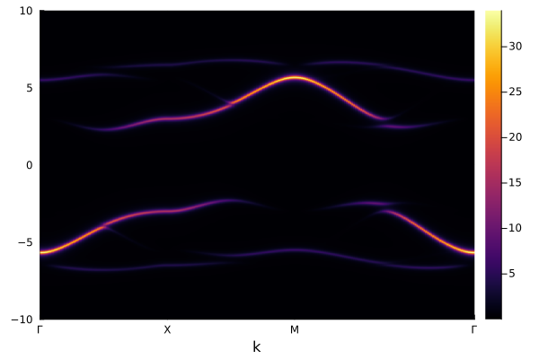

Fermi Hubbard Model on square lattice: spectral function
Single-particle spectral function
The following code can compute the single-particle spectral function of the Fermi Hubbard model on a square lattice using cluster perturbation theory (CPT).
using ExactDiagonalization
using LinearAlgebra: tr
using QuantumLattices
using QuantumClusterTheories
using TightBindingApproximation
using Plots
# define the unitcell of the square lattice
unitcell = Lattice([0.0, 0.0]; name=:Square, vectors=[[1.0, 0.0], [0.0, 1.0]])
# define a finite 2×2 cluster of the square lattice with periodic boundary condition
lattice = Lattice(unitcell, (2, 2), ('P', 'P'))
# define the Hilbert space (single-orbital spin-1/2 complex fermion)
hilbert = Hilbert(site=>Fock{:f}(1, 2) for site in eachindex(lattice))
# define the terms, i.e. the nearest-neighbor hopping, the Hubbard interaction, and the chemical potential
t = Hopping(:t, -1.0, 1)
U = Hubbard(:U, 8.0)
μ = Onsite(:μ, -U.value/2)
# define the quantum number of the sub-Hilbert space in which the computation is to be carried out
# here the particle number is set to be `length(lattice)` and Sz is set to be 0
quantumnumber = ℕ(length(lattice)) ⊠ 𝕊ᶻ(0)
# define the CPT frontend with exact diagonalization as the impurity solver
cpt = CPT(unitcell, lattice, hilbert, (t, μ, U), quantumnumber)
# define the energy range and the momentum path
emin = -10.0
emax = 10.0
N = 501
η = 0.1
es = LinRange(emin, emax, N)
path = ReciprocalPath(reciprocals(unitcell), rectangle"Γ-X-M-Γ"; length=100)
# compute the spectral function along the path
data = zeros(length(es), length(path))
for (i, e) in enumerate(es)
for (j, k) in enumerate(path)
data[i, j] = -2*imag(tr(cpt(e+1im*η, k)))
end
end
# plot the spectral function
Plots.plot(path, es, data)